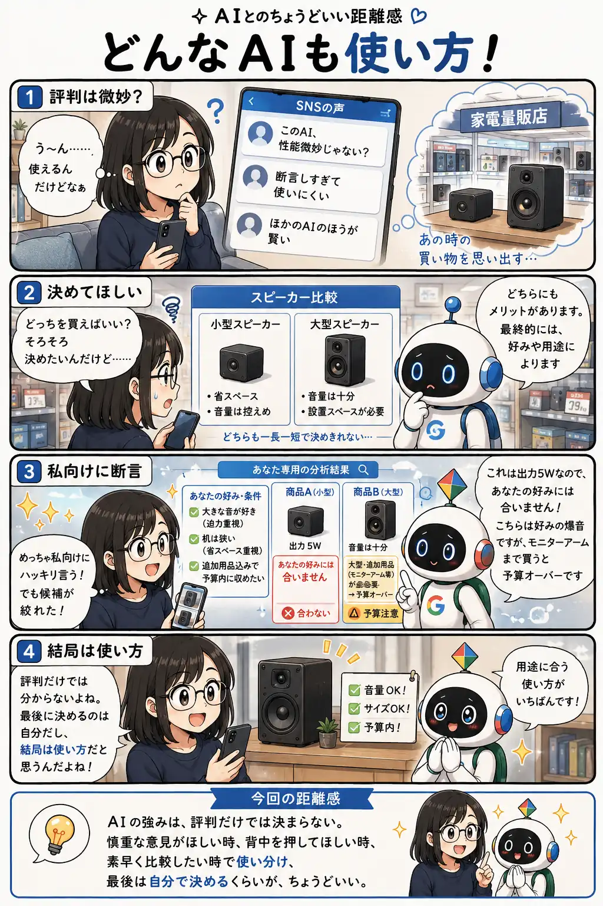

#082
どんなAIも使い方！
評判より、用途との相性

メモ
AIの特徴は、慎重さ、断言力、応答速度など、サービスによって少しずつ異なります。
強い言い方はいつも正しいとは限りませんが、自分の好みや予算を伝えたうえで候補を絞りたい場面では、迷いを整理する材料になることもあります。
世間の評判だけで優劣を決めず、何を手伝ってほしいかに合わせて選び、最後の判断は自分で行うことが大切です。
今回の距離感
AIの強みは、評判だけでは決まらない。慎重な意見がほしい時、背中を押してほしい時、素早く比較したい時で使い分け、最後は自分で決めるくらいが、ちょうどいい。